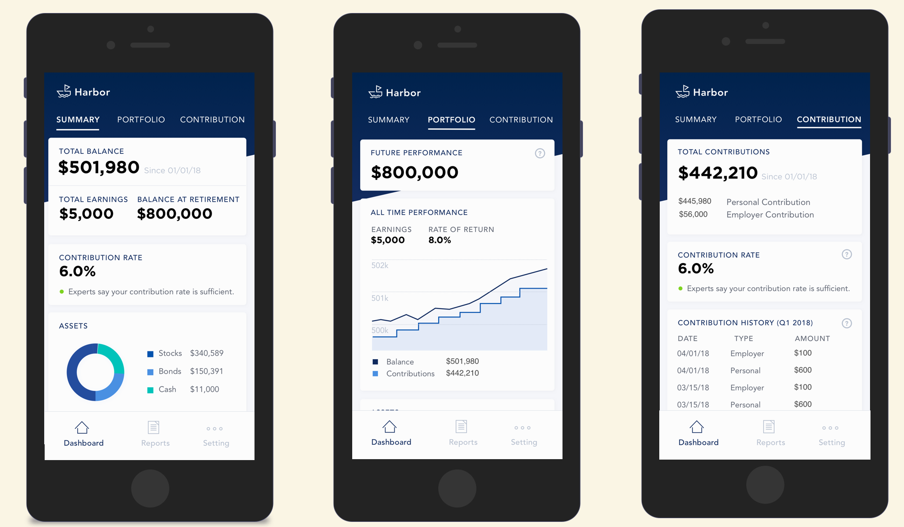
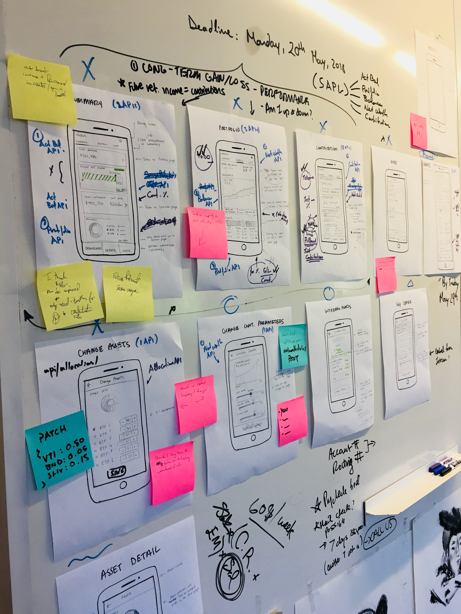
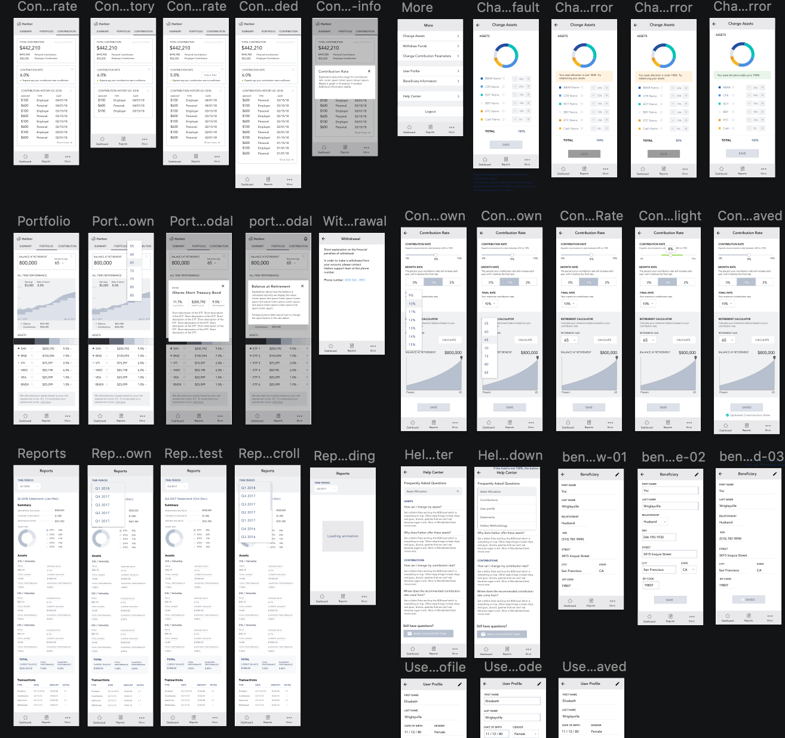

As the primary vehicle for retirement, 401(k) plans are complicated, daunting, and rife with expensive fees. Vest set out to make retirement accessible to small businesses by building an affordable and honest 401(k) plan.
As the first product designer at Vest, I designed Harbor, the employee mobile web app, from the ground up with a visual designer and small team of developers. In addition to interaction design, I wrote the copy, defined design and development workflows, and helped establish the product roadmap.
Since the founder had previously conducted several rounds of informal interviews, I co-created four personas with him to capture our users’ goals, behaviors, and needs. Based on the user research and behavioral finance strategies, I composed five design principles:
I drafted a product requirements document using the jobs-to-be-done framework to align on the tasks and components for each screen. Then, I began sketching low-fidelity wireframes and solicited open feedback by creating a design wall in our office space. I iterated on the hierarchy, copy, and visualizations based on usability testing and technical feasibility.
Design wall
Mid-fidelity wireframes
I partnered with our visual designer to refine the designs and establish the color palette, typography, and elements in the design system. After handing off the polished wireframes to our developers, I assisted in testing stories in QA.
As my first mobile project, I learned how to design for mobile by utilizing strategies such as linearizing content and generous touch targets. Vest was the first startup I worked for, so I learned how to quickly pivot directions and juggle responsibilities outside my written role..
In hindsight, I would have advocated for working in shorter cycles of concepting, testing, and development, so that we could have explored and validated hypotheses with users more frequently rather than single handoff to developers.